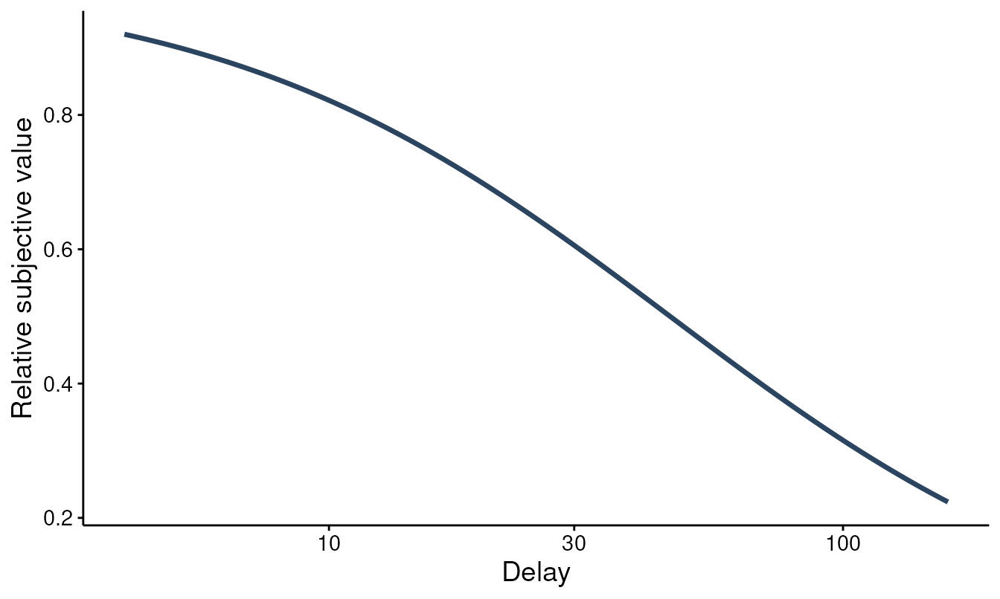

Discounting from trial-level choices
Brent Kaplan
Source:vignettes/choice-discounting.Rmd
choice-discounting.RmdMost discounting analyses start from indifference points (the amount
that makes a delayed reward feel equal to an immediate one). Many tasks,
though, record the raw decisions instead: for each offer, did the person
take the smaller-sooner (SS) reward or wait for the larger-later (LL)
one? fit_dd_choice() models those trial-level choices
directly, without reducing them to indifference points first.
It fits two kinds of model:
- a structural model that assumes a discount function
and estimates the discount rate
kfrom the choices, and - a descriptive model (Young, 2018) that predicts the choice from its features (the amount ratio and the delay) without committing to a discount function.
This vignette is a tour of both. It pairs with
vignette("delay-discounting-basics") (the
indifference-point workflow),
vignette("dd-group-comparisons") (contrasting
k across groups), and
vignette("bayesian-discounting") (the brms versions). TMB
must be installed for the models to run.
Data format
Choice data are long, one row per trial, with five columns: a subject
id, the smaller-sooner amount ss_amount, the
larger-later amount ll_amount, the delay to
the larger reward, and the choice (0 = chose
SS, 1 = chose LL). simulate_dd_choice()
generates data in exactly that layout, which makes it convenient for a
reproducible walk-through; bring your own frame with the same columns
for a real analysis.
ch <- simulate_dd_choice(n_subjects = 30, log_k_pop = log(0.02), seed = 1)
head(ch)
#> # A tibble: 6 × 5
#> id ss_amount ll_amount delay choice
#> <chr> <dbl> <dbl> <dbl> <int>
#> 1 1 40 65 25 0
#> 2 1 55 75 61 0
#> 3 1 31 85 14 1
#> 4 1 14 25 19 1
#> 5 1 47 60 160 0
#> 6 1 25 30 7 1Structural model
fit_dd_choice(mode = "structural") is the model to use
when you want a discount rate. It compares the discounted value of the
larger-later reward against the smaller-sooner reward on every trial and
estimates log k directly:
logit P(LL) = b0 + gamma ((ll / ss) D(k, delay) - 1),
where D(k, delay) is the discount function (Mazur’s
hyperbola by default), gamma is the choice sensitivity (how
sharply choices follow value), and the optional b0 is a
side-independent choice bias (off by default). The comparison is
scale-invariant, so only the ratio of the rewards matters.
fit_s <- fit_dd_choice(ch, mode = "structural", verbose = 0)
summary(fit_s)
#>
#> Structural Choice Discounting Model Summary
#> ==================================================
#>
#> Call:
#> fit_dd_choice(data = ch, mode = "structural", verbose = 0)
#>
#> Mode: structural
#> Equation: mazur
#> Backend: TMB_choice
#> Convergence: Yes
#> Subjects: 30 Observations: 300
#>
#> --- Fixed Effects (k) ---
#> term estimate std.error statistic p.value
#> k:(Intercept) 0.0217 0.0029 -29.156 <2e-16
#> gamma 4.9956 0.7467 10.762 <2e-16
#>
#> --- Variance Components ---
#> Component Estimate Scale
#> sigma_u (log10-k RE SD) 0.1339 log10
#>
#> --- Fit Statistics ---
#> Log-likelihood: -113.6
#> AIC: 233.19 BIC: 244.3
#>
#> Notes:
#> * gamma is the choice-sensitivity (slope) parameter on the logit scale.The fixed-effect k is on the natural scale, alongside
gamma. A subject random intercept on log k
lets each person have their own rate, pooled toward the group.
tidy() returns the same information as a data frame:
tidy(fit_s)
#> # A tibble: 3 × 8
#> term estimate std.error statistic p.value component estimate_scale
#> <chr> <dbl> <dbl> <dbl> <dbl> <chr> <chr>
#> 1 k:(Intercept) 0.0217 0.00285 -29.2 7.02e-187 fixed natural
#> 2 gamma 5.00 0.747 10.8 5.20e- 27 shape natural
#> 3 sigma_u (log… 0.134 NA NA NA variance log10
#> # ℹ 1 more variable: term_display <chr>Because the model estimates a discount rate, it implies a discounting
curve, the same object the indifference-point models produce.
plot() draws that implied curve,
D(k, delay) = 1 / (1 + k * delay), from the fitted
k:
plot(fit_s, type = "population")
Descriptive model (Young, 2018)
fit_dd_choice(mode = "descriptive") takes a different
stance. Rather than assume a discount function, it predicts the choice
with a logistic mixed model whose fixed effects are the log amount
ratio, log(ll / ss), and the log delay,
log(delay + 1), with subject random slopes on both. The
coefficients (theta) are sensitivities on the logit scale,
not a discount rate.
fit_d <- fit_dd_choice(ch, mode = "descriptive", verbose = 0)
summary(fit_d)
#>
#> Descriptive (Young 2018) Choice Discounting Model Summary
#> ==================================================
#>
#> Call:
#> fit_dd_choice(data = ch, mode = "descriptive", verbose = 0)
#>
#> Backend: TMB_choice Convergence: Yes
#> Subjects: 30 Observations: 300
#>
#> --- Fixed sensitivities (logit scale) ---
#> term estimate std.error statistic p.value
#> log(ll_amount/ss_amount) 6.4112 0.964 6.6507 2.92e-11
#> log(delay + 1) -0.9000 0.964 -0.9337 0.35
#>
#> --- Random-slope (co)variances ---
#> Group Term Variance StdDev Corr
#> subject log(ll_amount/ss_amount) 0.81446946 0.9024796 NA
#> subject log(delay + 1) 0.04894997 0.2212464 -1
#>
#> --- Fit Statistics ---
#> Log-likelihood: -122.67 AIC: 255.35 BIC: 273.87
#>
#> Notes:
#> * theta are logit-scale (Young 2018) sensitivities; not exponentiated.Interpret the sensitivities by their sign. A positive sensitivity on
log(ll / ss) means choices move toward the larger-later
reward as it grows relative to the smaller-sooner one; a negative
sensitivity on log(delay + 1) means a longer wait pushes
choices back toward smaller-sooner. The descriptive model does not
return a k, so it cannot draw a discounting curve, but it
does not depend on the discount function being correctly specified
either. (The random-slope covariance is weakly identified in this small
fixed-item example, so its correlation can sit at the boundary; read the
fixed sensitivities first.)
Use the structural model when you want an interpretable discount rate that is comparable across tasks and groups under a shared discount function. Reach for the descriptive model when you want a function-free summary of what drives the choices, or as a check on whether the structural form is doing the data justice.
S3 methods
Both fits carry the broom and base S3 surface. glance()
gives a one-row model summary; coef() returns the raw
parameter vector on the optimizer’s log scale (summary()
and tidy() report k and gamma
back-transformed to the natural scale); and predict() adds
a .prob column with the per-trial probability of choosing
larger-later:
glance(fit_s)
#> # A tibble: 1 × 11
#> model_class backend mode equation nobs n_subjects n_random_effects converged
#> <chr> <chr> <chr> <chr> <int> <int> <int> <lgl>
#> 1 beezdiscou… TMB_ch… stru… mazur 300 30 1 TRUE
#> # ℹ 3 more variables: logLik <dbl>, AIC <dbl>, BIC <dbl>
head(predict(fit_s))
#> # A tibble: 6 × 6
#> id ss_amount ll_amount delay choice .prob
#> <chr> <dbl> <dbl> <dbl> <dbl> <dbl>
#> 1 1 40 65 25 0 0.597
#> 2 1 55 75 61 0 0.125
#> 3 1 31 85 14 1 0.997
#> 4 1 14 25 19 1 0.809
#> 5 1 47 60 160 0 0.0295
#> 6 1 25 30 7 1 0.563tidy(), summary(), print(),
logLik(), AIC(), and BIC() work
as well.
From the 27-item MCQ to choices
The 27-item Monetary Choice Questionnaire is itself a set of SS-vs-LL
choices, so its responses fit this model after reshaping.
mcq27_to_choice() turns the long-form questionnaire
(subjectid / questionid /
response) into the per-trial frame, using the Kirby, Petry,
and Bickel (1999) item design:
mc <- mcq27_to_choice(mcq27)
head(mc)
#> # A tibble: 6 × 5
#> id ss_amount ll_amount delay choice
#> <chr> <dbl> <dbl> <dbl> <dbl>
#> 1 1 54 55 117 0
#> 2 1 55 75 61 0
#> 3 1 19 25 53 0
#> 4 1 31 85 7 1
#> 5 1 14 25 19 1
#> 6 1 47 50 160 0
fit_mcq <- fit_dd_choice(mc, mode = "structural", verbose = 0)
tidy(fit_mcq)
#> # A tibble: 3 × 8
#> term estimate std.error statistic p.value component estimate_scale
#> <chr> <dbl> <dbl> <dbl> <dbl> <chr> <chr>
#> 1 k:(Intercept) 0.00576 0.00864 -3.44 5.86e-4 fixed natural
#> 2 gamma 17.9 12.2 4.22 2.50e-5 shape natural
#> 3 sigma_u (log10… 0.907 NA NA NA variance log10
#> # ℹ 1 more variable: term_display <chr>This targets the same Mazur k construct and Kirby item
design that score_mcq27() uses, but estimates it with a
mixed-effects likelihood model rather than the per-subject Kirby
threshold scorer (see vignette("mcq27-scoring") for the
classic scorer).
Indifference points and choices agree
The structural choice model and the indifference-point models target
the same discount rate, so they should land in the same place when the
data come from the same process. Simulating both from a common
log k and fitting each confirms it:
lk <- log(0.02)
ip <- simulate_dd_ip(
n_subjects = 30, log_k_pop = lk,
family = "sltb", equation = "mazur", seed = 3
)
fit_ip <- fit_dd_tmb(ip, equation = "mazur", family = "sltb", random_effects = k ~ 1)
#> Fitting TMB mixed-effects discounting model (mazur, sltb)...
#> Subjects: 30, Observations: 210
#> Multi-start: best NLL = -340.78 (start set 2 of 3)
#> Converged (NLL = -340.78). Done.
choices <- simulate_dd_choice(n_subjects = 30, log_k_pop = lk, seed = 3)
fit_ch <- fit_dd_choice(choices, mode = "structural", verbose = 0)
c(
truth = exp(lk),
indifference_point = tidy(fit_ip)$estimate[tidy(fit_ip)$term == "k:(Intercept)"][1],
choice = tidy(fit_ch)$estimate[tidy(fit_ch)$term == "k:(Intercept)"][1]
)
#> truth indifference_point choice
#> 0.02000000 0.01791424 0.01914801The two estimates are compatible in this controlled simulation, recovering the same rate from different data; the package’s IP-vs-choice tie-out test checks that this agreement holds within tolerance.
Where to go next
- To compare
kbetween groups (treatment vs. control, and the like), addfactors =and useget_dd_param_emms()/get_dd_comparisons(), covered invignette("dd-group-comparisons"). - For a Bayesian fit of the structural choice model,
fit_dd_choice_brms()takes the same data and design; seevignette("bayesian-discounting").
References
- Kirby, K. N., Petry, N. M., & Bickel, W. K. (1999). Heroin addicts have higher discount rates for delayed rewards than non-drug-using controls. Journal of Experimental Psychology: General, 128(1), 78-87.
- Mazur, J. E. (1987). An adjusting procedure for studying delayed reinforcement. In M. L. Commons, J. E. Mazur, J. A. Nevin, & H. Rachlin (Eds.), The effect of delay and of intervening events on reinforcement value (pp. 55-73). Lawrence Erlbaum Associates.
- Young, M. E. (2018). Discounting: A practical guide to multilevel analysis of choice data. Journal of the Experimental Analysis of Behavior, 109(2), 293-312.